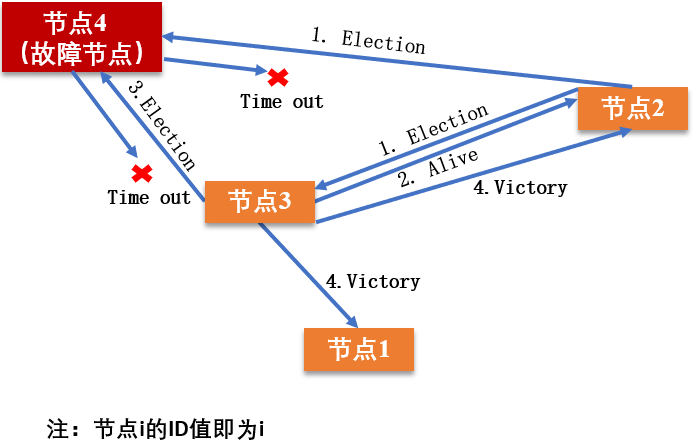
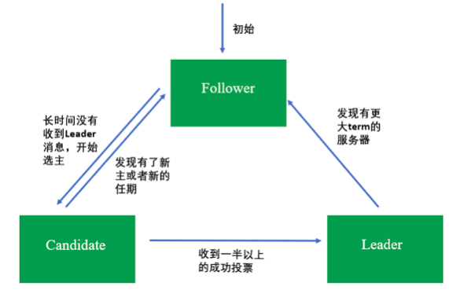
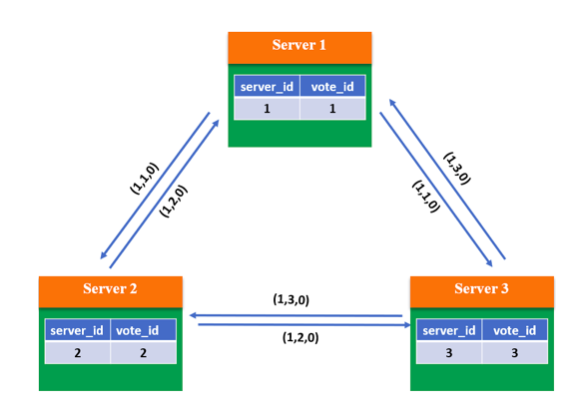
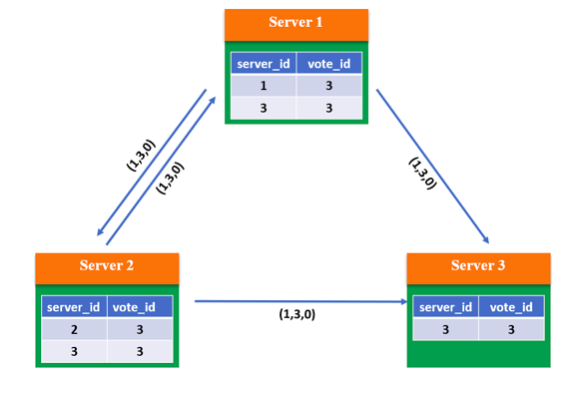
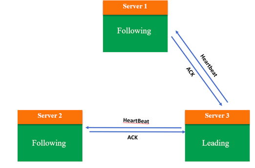
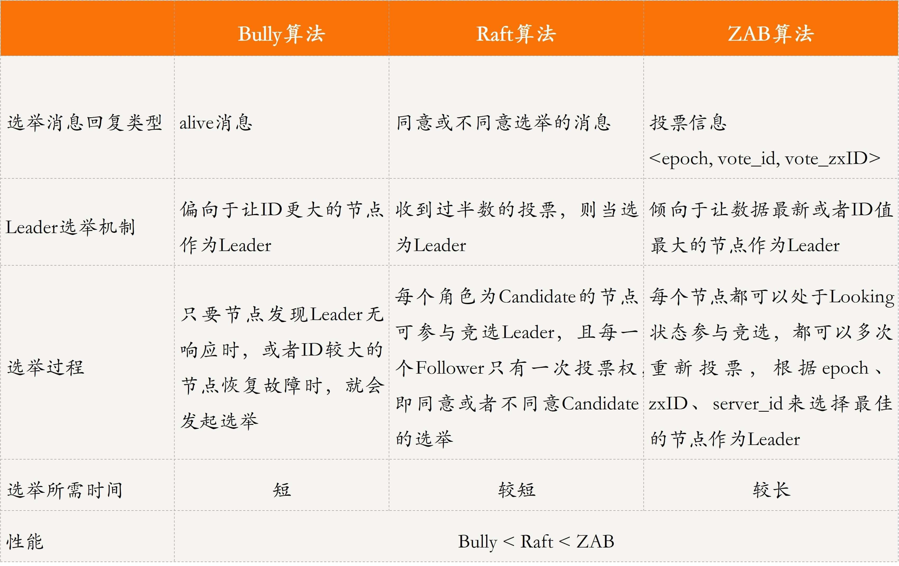
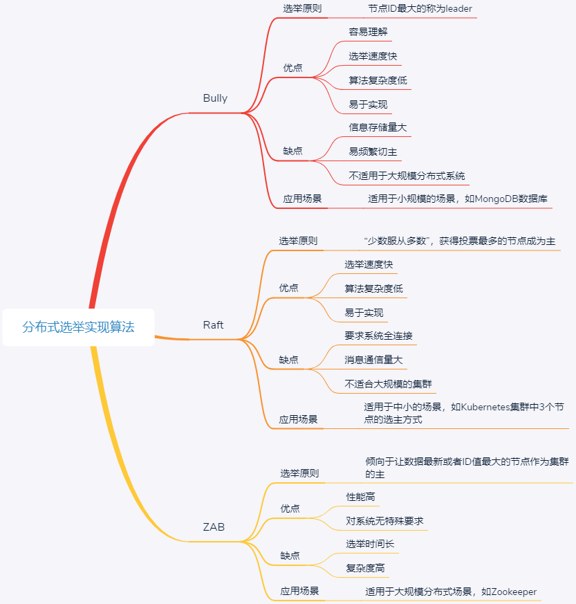

- 00 开篇词 四纵四横，带你透彻理解分布式技术.md.html
- 01 分布式缘何而起：从单兵，到游击队，到集团军.md.html
- 02 分布式系统的指标：啥是分布式的三围.md.html
- 03 分布式互斥：有你没我，有我没你.md.html
- 04 分布式选举：国不可一日无君.md.html
- 05 分布式共识：存异求同.md.html
- 06 分布式事务：All or nothing.md.html
- 07 分布式锁：关键重地，非请勿入.md.html
- 08 分布式技术是如何引爆人工智能的？.md.html
- 09 分布式体系结构之集中式结构：一人在上，万人在下.md.html
- 10 分布式体系结构之非集中式结构：众生平等.md.html
- 11 分布式调度架构之单体调度：物质文明、精神文明一手抓.md.html
- 12 分布式调度架构之两层调度：物质文明、精神文明两手抓.md.html
- 13 分布式调度架构之共享状态调度：物质文明、精神文明多手协商抓.md.html
- 14 答疑篇：分布式事务与分布式锁相关问题.md.html
- 15 分布式计算模式之MR：一门同流合污的艺术.md.html
- 16 分布式计算模式之Stream：一门背锅的艺术.md.html
- 17 分布式计算模式之Actor：一门甩锅的艺术.md.html
- 18 分布式计算模式之流水线：你方唱罢我登场.md.html
- 19 分布式通信之远程调用：我是你的千里眼.md.html
- 20 分布式通信之发布订阅：送货上门.md.html
- 21 分布式通信之消息队列：货物自取.md.html
- 22 答疑篇：分布式体系架构与分布式计算相关问题.md.html
- 23 CAP理论：这顶帽子我不想要.md.html
- 24 分布式数据存储系统之三要素：顾客、导购与货架.md.html
- 25 数据分布方式之哈希与一致性哈希：“掐指一算”与“掐指两算”的事.md.html
- 26 分布式数据复制技术：分身有术.md.html
- 27 分布式数据之缓存技术：“身手钥钱”随身带.md.html
- 28 分布式高可靠之负载均衡：不患寡，而患不均.md.html
- 29 分布式高可靠之流量控制：大禹治水，在疏不在堵.md.html
- 30 分布式高可用之故障隔离：当断不断，反受其乱.md.html
- 31 分布式高可用之故障恢复：知错能改，善莫大焉.md.html
- 32 答疑篇：如何判断并解决网络分区问题？.md.html
- 33 知识串联：以购买火车票的流程串联分布式核心技术.md.html
- 34 搭建一个分布式实验环境：纸上得来终觉浅，绝知此事要躬行.md.html
- 特别放送 Jackey：寄语天涯客，轻寒底用愁.md.html
- 特别放送 分布式下的一致性杂谈.md.html
- 特别放送 崔新：追根溯源，拨开云雾见青天.md.html
- 特别放送 徐志强：学习这件事儿，不到长城非好汉.md.html
- 特别放送 那些你不能错过的分布式系统论文.md.html
- 结束语 为什么说提升职业竞争力要从尊重、诚实开始？.md.html
- 捐赠
04 分布式选举：国不可一日无君
你好，我是聂鹏程。今天，我来继续带你打卡分布式核心技术。
相信你对集群的概念并不陌生。简单说，集群一般是由两个或两个以上的服务器组建而成，每个服务器都是一个节点。我们经常会听到数据库集群、管理集群等概念，也知道数据库集群提供了读写功能，管理集群提供了管理、故障恢复等功能。
接下来，你开始好奇了，对于一个集群来说，多个节点到底是怎么协同，怎么管理的呢。比如，数据库集群，如何保证写入的数据在每个节点上都一致呢？
也许你会说，这还不简单，选一个“领导”来负责调度和管理其他节点就可以了啊。
这个想法一点儿也没错。这个“领导”，在分布式中叫做主节点，而选“领导”的过程在分布式领域中叫作分布式选举。
然后，你可能还会问，怎么选主呢。那接下来，我们就一起去揭开这个谜底吧。
为什么要有分布式选举？
主节点，在一个分布式集群中负责对其他节点的协调和管理，也就是说，其他节点都必须听从主节点的安排。
主节点的存在，就可以保证其他节点的有序运行，以及数据库集群中的写入数据在每个节点上的一致性。这里的一致性是指，数据在每个集群节点中都是一样的，不存在不同的情况。
当然，如果主故障了，集群就会天下大乱，就好比一个国家的皇帝驾崩了，国家大乱一样。比如，数据库集群中主节点故障后，可能导致每个节点上的数据会不一致。
这，就应了那句话“国不可一日无君”，对应到分布式系统中就是“集群不可一刻无主”。总结来说，选举的作用就是选出一个主节点，由它来协调和管理其他节点，以保证集群有序运行和节点间数据的一致性。
分布式选举的算法
那么，如何在集群中选出一个合适的主呢？这是一个技术活儿，目前常见的选主方法有基于序号选举的算法（ 比如，Bully算法）、多数派算法（比如，Raft算法、ZAB算法）等。接下来，就和我一起来看看这几种算法吧。
长者为大：Bully算法
Bully算法是一种霸道的集群选主算法，为什么说是霸道呢？因为它的选举原则是“长者”为大，即在所有活着的节点中，选取ID最大的节点作为主节点。
在Bully算法中，节点的角色有两种：普通节点和主节点。初始化时，所有节点都是平等的，都是普通节点，并且都有成为主的权利。但是，当选主成功后，有且仅有一个节点成为主节点，其他所有节点都是普通节点。当且仅当主节点故障或与其他节点失去联系后，才会重新选主。
Bully算法在选举过程中，需要用到以下3种消息：
- Election消息，用于发起选举；
- Alive消息，对Election消息的应答；
- Victory消息，竞选成功的主节点向其他节点发送的宣誓主权的消息。
Bully算法选举的原则是“长者为大”，意味着它的假设条件是，集群中每个节点均知道其他节点的ID。在此前提下，其具体的选举过程是：
- 集群中每个节点判断自己的ID是否为当前活着的节点中ID最大的，如果是，则直接向其他节点发送Victory消息，宣誓自己的主权；
- 如果自己不是当前活着的节点中ID最大的，则向比自己ID大的所有节点发送Election消息，并等待其他节点的回复；
- 若在给定的时间范围内，本节点没有收到其他节点回复的Alive消息，则认为自己成为主节点，并向其他节点发送Victory消息，宣誓自己成为主节点；若接收到来自比自己ID大的节点的Alive消息，则等待其他节点发送Victory消息；
- 若本节点收到比自己ID小的节点发送的Election消息，则回复一个Alive消息，告知其他节点，我比你大，重新选举。

目前已经有很多开源软件采用了Bully算法进行选主，比如MongoDB的副本集故障转移功能。MongoDB的分布式选举中，采用节点的最后操作时间戳来表示ID，时间戳最新的节点其ID最大，也就是说时间戳最新的、活着的节点是主节点。
小结一下。Bully算法的选择特别霸道和简单，谁活着且谁的ID最大谁就是主节点，其他节点必须无条件服从。这种算法的优点是，选举速度快、算法复杂度低、简单易实现。
但这种算法的缺点在于，需要每个节点有全局的节点信息，因此额外信息存储较多；其次，任意一个比当前主节点ID大的新节点或节点故障后恢复加入集群的时候，都可能会触发重新选举，成为新的主节点，如果该节点频繁退出、加入集群，就会导致频繁切主。
民主投票：Raft算法
Raft算法是典型的多数派投票选举算法，其选举机制与我们日常生活中的民主投票机制类似，核心思想是“少数服从多数”。也就是说，Raft算法中，获得投票最多的节点成为主。
采用Raft算法选举，集群节点的角色有3种：
- Leader，即主节点，同一时刻只有一个Leader，负责协调和管理其他节点；
- Candidate，即候选者，每一个节点都可以成为Candidate，节点在该角色下才可以被选为新的Leader；
- Follower，Leader的跟随者，不可以发起选举。
Raft选举的流程，可以分为以下几步：
- 初始化时，所有节点均为Follower状态。
- 开始选主时，所有节点的状态由Follower转化为Candidate，并向其他节点发送选举请求。
- 其他节点根据接收到的选举请求的先后顺序，回复是否同意成为主。这里需要注意的是，在每一轮选举中，一个节点只能投出一张票。
- 若发起选举请求的节点获得超过一半的投票，则成为主节点，其状态转化为Leader，其他节点的状态则由Candidate降为Follower。Leader节点与Follower节点之间会定期发送心跳包，以检测主节点是否活着。
- 当Leader节点的任期到了，即发现其他服务器开始下一轮选主周期时，Leader节点的状态由Leader降级为Follower，进入新一轮选主。
节点的状态迁移如下所示（图中的term指的是选举周期）：

请注意，每一轮选举，每个节点只能投一次票。这种选举就类似人大代表选举，正常情况下每个人大代表都有一定的任期，任期到后会触发重新选举，且投票者只能将自己手里唯一的票投给其中一个候选者。对应到Raft算法中，选主是周期进行的，包括选主和任值两个时间段，选主阶段对应投票阶段，任值阶段对应节点成为主之后的任期。但也有例外的时候，如果主节点故障，会立马发起选举，重新选出一个主节点。
Google开源的Kubernetes，擅长容器管理与调度，为了保证可靠性，通常会部署3个节点用于数据备份。这3个节点中，有一个会被选为主，其他节点作为备。Kubernetes的选主采用的是开源的etcd组件。而，etcd的集群管理器etcds，是一个高可用、强一致性的服务发现存储仓库，就是采用了Raft算法来实现选主和一致性的。
小结一下。Raft算法具有选举速度快、算法复杂度低、易于实现的优点；缺点是，它要求系统内每个节点都可以相互通信，且需要获得过半的投票数才能选主成功，因此通信量大。该算法选举稳定性比Bully算法好，这是因为当有新节点加入或节点故障恢复后，会触发选主，但不一定会真正切主，除非新节点或故障后恢复的节点获得投票数过半，才会导致切主。
具有优先级的民主投票：ZAB算法
ZAB（ZooKeeper Atomic Broadcast）选举算法是为ZooKeeper实现分布式协调功能而设计的。相较于Raft算法的投票机制，ZAB算法增加了通过节点ID和数据ID作为参考进行选主，节点ID和数据ID越大，表示数据越新，优先成为主。相比较于Raft算法，ZAB算法尽可能保证数据的最新性。所以，ZAB算法可以说是对Raft算法的改进。
使用ZAB算法选举时，集群中每个节点拥有3种角色：
- Leader，主节点；
- Follower，跟随者节点；
- Observer，观察者，无投票权。
选举过程中，集群中的节点拥有4个状态：
- Looking状态，即选举状态。当节点处于该状态时，它会认为当前集群中没有Leader，因此自己进入选举状态。
- Leading状态，即领导者状态，表示已经选出主，且当前节点为Leader。
- Following状态，即跟随者状态，集群中已经选出主后，其他非主节点状态更新为Following，表示对Leader的追随。
- Observing状态，即观察者状态，表示当前节点为Observer，持观望态度，没有投票权和选举权。
投票过程中，每个节点都有一个唯一的三元组(server_id, server_zxID, epoch)，其中server_id表示本节点的唯一ID；server_zxID表示本节点存放的数据ID，数据ID越大表示数据越新，选举权重越大；epoch表示当前选取轮数，一般用逻辑时钟表示。
ZAB选举算法的核心是“少数服从多数，ID大的节点优先成为主”，因此选举过程中通过(vote_id, vote_zxID)来表明投票给哪个节点，其中vote_id表示被投票节点的ID，vote_zxID表示被投票节点的服务器zxID。ZAB算法选主的原则是：server_zxID最大者成为Leader；若server_zxID相同，则server_id最大者成为Leader。
接下来，我以3个Server的集群为例，此处每个Server代表一个节点，与你介绍ZAB选主的过程。
第一步：当系统刚启动时，3个服务器当前投票均为第一轮投票，即epoch=1，且zxID均为0。此时每个服务器都推选自己，并将选票信息

第二步：根据判断规则，由于3个Server的epoch、zxID都相同，因此比较server_id，较大者即为推选对象，因此Server 1和Server 2将vote_id改为3，更新自己的投票箱并重新广播自己的投票。

第三步：此时系统内所有服务器都推选了Server 3，因此Server 3当选Leader，处于Leading状态，向其他服务器发送心跳包并维护连接；Server1和Server2处于Following状态。

小结一下。ZAB算法性能高，对系统无特殊要求，采用广播方式发送信息，若节点中有n个节点，每个节点同时广播，则集群中信息量为n*(n-1)个消息，容易出现广播风暴；且除了投票，还增加了对比节点ID和数据ID，这就意味着还需要知道所有节点的ID和数据ID，所以选举时间相对较长。但该算法选举稳定性比较好，当有新节点加入或节点故障恢复后，会触发选主，但不一定会真正切主，除非新节点或故障后恢复的节点数据ID和节点ID最大，且获得投票数过半，才会导致切主。
三种选举算法的对比分析
好了，我已经带你理解了分布式选举的3种经典算法，即Bully算法、Raft算法和ZAB算法。那么接下来，我就从消息传递内容、选举机制和选举过程的维度，对这3种算法进行一个对比分析，以帮助你理解记忆。

知识扩展：为什么“多数派”选主算法通常采用奇数节点，而不是偶数节点呢？
多数派选主算法的核心是少数服从多数，获得投票多的节点胜出。想象一下，如果现在采用偶数节点集群，当两个节点均获得一半投票时，到底应该选谁为主呢？
答案是，在这种情况下，无法选出主，必须重新投票选举。但即使重新投票选举，两个节点拥有相同投票数的概率也会很大。因此，多数派选主算法通常采用奇数节点。
这，也是大家通常看到ZooKeeper、 etcd、Kubernetes等开源软件选主均采用奇数节点的一个关键原因。
总结
今天，我首先与你讲述了什么是分布式选举，以及为什么需要分布式选举。然后，我和你介绍了实现分布式选举的3种方法，即：Bully算法、Raft算法，以及ZooKeeper中的ZAB算法，并通过实例与你展示了各类方法的选举流程。
我将今天的主要内容总结为了如下所示的思维导图，来帮助你加深理解与记忆。

思考题
- 分布式选举和一致性的关系是什么？
- 你是否见到过一个集群中存在双主的场景呢？
我是聂鹏程，感谢你的收听，欢迎你在评论区给我留言分享你的观点，也欢迎你把这篇文章分享给更多的朋友一起阅读。我们下期再会！
© 2019 - 2023 Liangliang Lee. Powered by gin and hexo-theme-book.